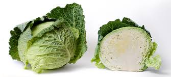

CABBAGE
Introduction

Cabbage, comprising several cultivars of Brassica oleracea, is a leafy green, red (purple), or white (pale green) biennial plant grown as an annual vegetable crop for its dense-leaved heads. It is descended from the wild cabbage (B. oleracea var. oleracea), and belongs to the "cole crops" or brassicas, meaning it is closely related to broccoli and cauliflower (var. botrytis); Brussels sprouts (var. gemmifera); and Savoy cabbage
A cabbage generally weighs between 500 and 1,000 grams (1 and 2 lb). Smooth-leafed, firm-headed green cabbages are the most common, with smooth-leafed purple cabbages and crinkle-leafed savoy cabbages of both colours being rarer. Under conditions of long sunny days, such as those found at high northern latitudes in summer, cabbages can grow quite large. As of 2012, the heaviest cabbage was 62.71 kilograms (138 lb 4 oz). Cabbage heads are generally picked during the first year of the plant's life cycle, but plants intended for seed are allowed to grow a second year and must be kept separate from other cole crops to prevent cross-pollination. Cabbage is prone to several nutrient deficiencies, as well as to multiple pests, and bacterial and fungal diseases.
Cabbage was most likely domesticated somewhere in Europe in ancient history before 1000 BC. Cabbage use in cuisine has been documented since Antiquity.It was described as a table luxury in the Roman Empire.By the Middle Ages, cabbage had become a prominent part of European cuisine, as indicated by manuscript illuminations. New variates were introduced from the Renaissance on, mostly by Germanic-speaking peoples. Savoy cabbage was developed in the 16th century. By the 17th and 18th centuries, cabbage was popularised as staple food in central, northern, and Eastern Europe.It was also employed by European sailors to prevent scurvy during long ship voyages at sea. Starting in the early modern era, cabbage was exported to the Americas, Asia, and around the world
hey can be prepared many different ways for eating; they can be pickled, fermented (for dishes such as sauerkraut), steamed, stewed, roasted, sautéed, braised, or eaten raw. Raw cabbage is a rich source of vitamin K, vitamin C, and dietary fiber. World production of cabbage and other brassicas in 2020 was 71 million tonnes, led by China with 48% of the total.
Nutrition
Cabbage is a nutritious cruciferous vegetable that is low in calories and high in fiber, vitamins, and minerals. Here's a breakdown of the nutritional value of cabbage:
- Macronutrients:
- Calories: One cup (89 grams) of shredded raw cabbage contains only 22 calories.
- Carbohydrates: 5 grams of carbohydrates, of which 2 grams are fiber.
- Protein: 1 gram of protein.
- Fat: Negligible amount of fat.
- Vitamins:
- Vitamin C: One cup of shredded raw cabbage provides 54% of the Daily Value (DV) for vitamin C, which is an important antioxidant and supports immune function.
- Vitamin K: Cabbage is an excellent source of vitamin K, providing 85% of the DV in one cup. Vitamin K is essential for blood clotting and bone health.
- Folate: It provides a good amount of folate, with one cup containing around 10% of the DV. Folate is crucial for cell growth and development.
- Minerals:
- Manganese: Cabbage is a rich source of manganese, providing 10% of the DV in one cup. Manganese is an essential mineral involved in various enzymatic processes.
- Potassium: One cup of cabbage contains about 4% of the DV for potassium, which is important for maintaining fluid balance and supporting heart health.
- Other minerals: Cabbage also provides smaller amounts of calcium, iron, and magnesium.
- Antioxidants:
- Cabbage is rich in antioxidants, including vitamin C, flavonoids, and anthocyanins (in red cabbage), which help protect cells from oxidative stress and may reduce the risk of certain chronic diseases.
- Fiber:
- With 2 grams of fiber per cup, cabbage can contribute to a healthy digestive system and promote feelings of fullness.
- Glucosinolates:
- Cabbage, like other cruciferous vegetables, contains glucosinolates, which are sulfur-containing compounds that have been studied for their potential cancer-fighting properties.
Cabbage is versatile and can be enjoyed raw in salads, cooked in various dishes, or fermented as sauerkraut. Its low-calorie and nutrient-dense nature make it an excellent addition to a healthy diet, providing a range of vitamins, minerals, antioxidants, and beneficial plant compounds.
Soil and Nutrition

Here are the key points regarding soil and nutritional requirements for growing cabbage:
Soil Requirements:
- Soil Type: Cabbage grows best in well-draining, fertile loams or clay loams with good moisture-holding capacity. Heavy clay soils can impede root growth and drainage, while sandy soils may not retain enough moisture.
2. Soil pH: The ideal soil pH range for cabbage is between 6.0 and 7.5. Acidic soils (pH below 6.0) may require liming to raise the pH for optimal growth.
3. Soil Preparation: Cabbage benefits from deep tillage and incorporation of well-rotted manure or compost before planting to improve soil structure, fertility, and water-holding capacity.
Nutrient Requirements:
- Nitrogen (N): Cabbage has a high nitrogen requirement, especially during the head formation stage. Typical nitrogen application rates range from 100 to 150 pounds per acre.
- Phosphorus (P): Phosphorus is essential for root development, head formation, and overall plant growth. Recommended rates range from 60 to 120 pounds of P₂O₅ per acre.
- Potassium (K): Potassium plays a role in water regulation, disease resistance, and overall plant vigor. Typical application rates range from 60 to 120 pounds of K₂O per acre.
- Boron (B): Cabbage is sensitive to boron deficiency, which can cause hollow stems and discolored heads. A small amount of boron fertilizer or borax may be required in deficient soils.
Management:
- Soil Testing: Conducting soil tests before planting helps determine the existing nutrient levels and guides the appropriate fertilizer application rates.
- Timing of Application: Apply a portion of the recommended nitrogen, phosphorus, and potassium as a basal dose before planting or transplanting. Split the remaining nitrogen into two or three side-dressings during the growing season, especially during head formation.
- Fertilizer Sources: Organic sources like manure, compost, and green manures can provide nutrients and improve soil health, but inorganic fertilizers may be needed to supplement nutrient requirements.
- Nutrient Deficiency Symptoms: Nitrogen deficiency can cause stunted growth and pale green leaves, while phosphorus deficiency can result in purple or reddish discoloration of leaves and delayed head formation. Potassium deficiency can cause leaf scorching and poor head development.
Proper soil management and balanced nutrition are essential for achieving good cabbage yields and quality heads. Following recommended practices for soil preparation, fertilizer application, and nutrient management can help optimize cabbage production while promoting sustainable soil health.
How to grow Cabbage
Here are the steps for growing cabbage:
- Choose the right variety: Select a cabbage variety suited for your climate and intended use (early, mid-season, or late harvest). Popular varieties include Green Boy, Red Express, and Stonehead.
- Start seeds indoors (optional): For an early crop, start seeds indoors 6-8 weeks before the last expected frost date. Sow seeds 1/4 to 1/2 inch deep in seed trays or containers.
Prepare the soil: Cabbage grows best in well-draining, fertile soil with a pH between 6.0 and 7.5. Add compost or well-rotted manure to the soil before planting.
- Transplanting or direct sowing: Transplant seedlings 12-24 inches apart in rows spaced 2-3 feet apart when they are 4-6 weeks old and have 5-7 true leaves. For direct sowing, plant seeds 1/2 inch deep and 12 inches apart.
-
Watering: Cabbage requires consistent moisture, especially during head formation. Water deeply, about 1-2 inches per week, taking care not to wet the leaves.
-
Fertilizing: Side-dress cabbage plants with a balanced fertilizer or compost tea when they are half-grown and again when heads start forming.
-
Temperature: Cabbage prefers cool temperatures between 60°F and 65°F (15°C to 18°C) for best head development. Protect plants from extreme heat or cold.
-
Mulching: Apply a 2-4 inch layer of mulch around the plants to retain moisture and suppress weeds.
-
Pest and disease control: Monitor for pests like cabbage worms, aphids, and diseases like black rot and clubroot. Use row covers, remove affected plants, and rotate crops to manage problems.
-
- Harvesting: Cabbage heads are ready to harvest when they are compact, firm, and sized for the variety. Cut the heads off the stem with a sharp knife, leaving a few outer leaves attached.
With proper care and cool temperatures, cabbage can be a rewarding crop to grow in your vegetable garden. Succession planting every 2-3 weeks can provide a continuous harvest.
Fertilizing
Proper fertilization is crucial for growing healthy and productive cabbage plants. Here are some guidelines for fertilizing cabbage:
- Soil Testing: Before applying any fertilizers, it's recommended to conduct a soil test to determine the nutrient levels in your garden soil. This will help you understand the specific nutrient requirements and ensure you apply the appropriate type and amount of fertilizer.
-
Requirements:
-
Nitrogen (N): Cabbage requires a significant amount of nitrogen for leaf and head development. Apply a nitrogen-rich fertilizer at a rate of about 100-150 pounds of actual nitrogen per acre or 2-3 pounds per 100 square feet of garden space.
- Phosphorus (P): Phosphorus is essential for root development, flowering, and seed production. Apply a balanced fertilizer with a phosphorus content suitable for your soil test results.
- Potassium (K): Potassium is crucial for overall plant health, disease resistance, and water regulation. Apply a balanced fertilizer with potassium based on your soil test recommendations.
- Timing of Application:
-
At Planting: Apply a balanced fertilizer or well-rotted compost to the planting area before transplanting or direct sowing the cabbage. This provides essential nutrients for early growth and root development.
- Side-dressing: When the cabbage plants are about half-grown, side-dress them with a nitrogen-rich fertilizer, such as ammonium nitrate or calcium nitrate, to support leaf and head development.
- Additional Application: If needed, apply another side-dressing of nitrogen fertilizer when the cabbage heads start forming.
- Organic Fertilizers: If you prefer organic gardening, you can use compost, aged manure, or organic fertilizers like fish emulsion, seaweed extract, or bone meal to provide essential nutrients to your cabbage plants.
- Fertilizer Application Method:
- Broadcast: For larger garden areas, broadcast the fertilizer evenly over the soil surface and incorporate it into the top few inches of soil before planting.
- Banding: Apply a narrow band of fertilizer a few inches away from the cabbage plants, then lightly cultivate or water it into the soil.
- Side-dressing: For side-dressing, apply the fertilizer in a shallow trench or ring around each plant, about 6-8 inches away from the stem, and lightly cultivate or water it in.
- Watering: After applying fertilizers, water the cabbage plants thoroughly to help dissolve and distribute the nutrients in the soil.
- Foliar Feeding: In addition to soil applications, you can also consider foliar feeding with a water-soluble fertilizer or compost tea to provide a quick nutrient boost during the growing season.
Remember to follow the specific fertilizer application rates and guidelines on the product labels, and adjust the amounts based on your soil test results and the size of your garden area. Proper fertilization will help ensure your cabbage plants receive the essential nutrients they need for optimal growth and head development.